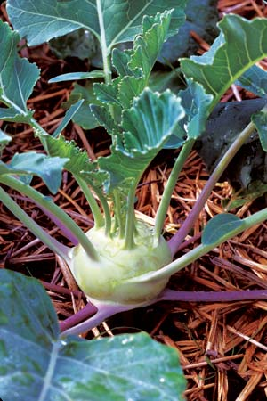
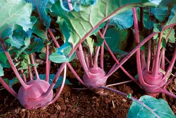
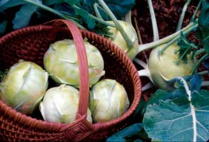
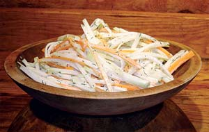
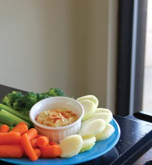

It’s a root, it’s a tuber - no, it’s a super stem! So what exactly is this strange round vegetable with leafy projections? Though sometimes called “space cabbage,” kohlrabi really is a very down-to-earth veggie. German for “cabbage turnip,” kohlrabi is a member of the extensive cabbage family (which also includes broccoli, cauliflower, kale and mustard) and offers the same awesome health benefits as these cole crop cousins. Yet kohlrabi is easier to grow than its relatives, and fast to mature, making it ideal for fall or early spring planting.
Compared to the rest of the cabbage family, kohlrabi is thought to have been developed fairly recently - the 16th century - in central or northern Europe from a thick-stemmed plant known as “marrow cabbage.” The modern kohlrabi is actually an enlarged stem that develops into a bulb just above the soil.
The round bulbs can be steamed, stuffed or stir-fried; added to soups; or sliced and baked. Raw kohlrabi “chips” are crisp, sweet and mildly tangy, making them sensational with vegetable dips, or in salads and slaws. And don’t forget the greens: They make tasty, nutritious additions to salads and stir-fries.
Adventurous gardeners and cooks who try kohlrabi become fast fans, singing the praises of this unique, easy-to-grow veggie. Here’s how to bring out the best in this cool crop.
Like other members of the cabbage clan, kohlrabi thrives in cool temperatures.
“You can grow kohlrabi in almost any region if you grow it in the spring or fall,” says Stephen Reiners, associate professor of horticulture for Cornell’s New York State Agricultural Experiment Station. “Good timing is key. You want to avoid having the bulbs form in hot weather, which can make them woody.” Allow 50 to 65 days from the time you sow your kohlrabi seeds to harvest, advises Reiners.
Brian Luton favors fall for growing kohlrabi at Stone’s Throw Farm in Nedrow, N.Y. From mid-July through early August, Luton starts the seeds in a greenhouse, using a homemade mixture of peat, perlite and vermiculite amended with greensand (glauconite), rock phosphate and lime, as well as 15 percent to 20 percent finished compost. “Kohlrabi likes a decent amount of compost right out of the gate,” he notes.
Luton transplants the small seedlings to the garden two to three weeks later (usually by the end of August), planting them 8 inches apart, with 10 to 12 inches between rows. The bulbs are ready for harvest by mid-September through October, depending on the variety and seasonal conditions, but they also can stay in the ground for on-demand harvests. “The mature bulbs are very frost tolerant and hold well in the garden,” he says. “In mild winters, I’ve harvested them in January.”
Growing kohlrabi for fall harvest has another advantage: “A light frost will actually enhance the bulbs’ flavor, making them sweeter, the same way it does with other cabbage family crops,” Reiners says.
For a spring crop, beat the heat by starting your seeds indoors about six weeks before your last expected frost. You can sow kohlrabi seeds directly in the garden, but you’ll have a better chance of avoiding the heat by starting the seeds earlier, indoors.
At Harmony Valley Farm in Viroqua, Wis., Richard de Wilde and his crew get an extra-early start by sowing kohlrabi seeds in the greenhouse in early March, eight to 10 weeks before their last frost date. He transplants the seedlings into raised garden beds in mid-April.
“We keep them under a row cover until daytime temperatures reach about 75 degrees,” explains de Wilde. “Kohlrabi tolerates cold temperatures, but the row cover provides enough extra warmth to keep the plants growing strong and fast. It also shields them from flea beetles, the only threat we’ve seen at this time of year.”
De Wilde harvests early kohlrabi varieties, such as ‘Kolibri,’ several weeks before broccoli and most other spring vegetables are available. “Our customers really look forward to it.”
In regions with the mildest winters, kohlrabi will prosper from fall through spring. Tucker Taylor, manager of Woodland Gardens in Winterville, Ga., grows a number of crops year-round for Atlanta-area chefs and farmers markets, but kohlrabi is a cool-season standard.
“We like it because it’s so quick,” he says. “We rotate it through our hoop houses [plastic-covered tunnels] from fall through spring, and harvest the bulbs at different stages.” Taylor’s crew first starts the seeds in a greenhouse using Sunshine Mix, an organic seed-starting medium. “We add a little kelp to the mix to provide micronutrients,” he says. The seedlings are then transplanted into the hoop houses about a month later; full-size bulbs are harvested about six weeks after that.
Taylor also grows baby ‘Purple’ kohlrabi greens year-round in a greenhouse, which is heated only enough to keep the tender greens from freezing on extra-cold nights.
“The kohlrabi serves as the base of our microgreens mix, which also includes red mustard, broccoli, ‘Red Russian’ kale, red amaranth and arugula,” he explains. “It adds bright color to the mix and is very easy to grow.”
For his savory mix, Taylor grows the various greens individually in open flats filled with earthworm castings. When the greens are about 10 to 12 days old, he snips the leaves with scissors just above soil level, blends them together, and bags them for sale.
Beyond the need for cool temperatures and full sun, kohlrabi is not especially demanding. “Anything you can do to ensure steady, consistent growth will help,” Reiners says. “Too much stress on the plant - such as drought or high temperatures - can affect the bulb, causing it to become woody or spicy like a radish. With even temperatures and consistent soil moisture, kohlrabi will stay tender and mild.”
The best way to provide those stress-free conditions is to be sure your soil contains plenty of organic matter (such as compost, grass clippings or well-rotted manure) that releases nutrients and moisture slowly and steadily.
Kohlrabi is not a heavy feeder. A generous layer of clippings or compost (half inch to 1 inch) worked into the soil before planting should provide all the needed nutrients. For an extra boost, side dress the plants with a little more compost when you first notice the bulbs beginning to swell.
A layer of organic mulch (such as straw or shredded leaves) will also help moderate soil temperature and moisture. But for spring kohlrabi crops, only add the mulch after the soil has warmed. Otherwise you risk slowing your plants’ growth.
Insect pests and diseases shouldn’t be a problem. “We do use insect screens on the sides of the hoop houses, but we haven’t found cabbage loopers to be a problem the way they can be on other cabbage crops,” Taylor says. If the small green worms known as cabbage loopers do show up, simply use Bt (Bacillus thuringiensis) to keep them in check.
Kohlrabi won’t keep you waiting long. Within weeks of planting, you’ll see the stems begin to swell and form the funny round globes that prompted its nickname, “space cabbage.” Soon after that, your kohlrabi will be ready to harvest.
If it’s spring, don’t hesitate: Kohlrabi is most tender and mild-flavored when the bulbs are no more than 2 to 3 inches across, Reiners says. Fall-grown kohlrabi is less touchy. In fact, the plants will tolerate temperatures to 10 degrees, so you can harvest at a more leisurely pace.
You’re bound to cook up plenty of ways to enjoy your harvest. Both the bulbs and leaves are extremely versatile. But if you find you just cannot use all your kohlrabi at harvest time, it’s no big deal. Simply trim off the leaves and stems, wrap the bulbs in plastic and store them in your refrigerator or a root cellar for several months. Pretty cool, huh?
Like other cabbage crops, kohlrabi is loaded with good nutrition. Just 1 cup of raw kohlrabi contains nearly 100 percent of the daily requirement for vitamin C, plus it’s a good source of fiber, and has less than 40 calories. Cole crops such as kohlrabi also contain glucosinolates, which break down into compounds that researchers think may help protect against many kinds of cancer.
You can use either purple or white kohlrabi in the following recipes - the interior of both types is white, and both have the same mild, tangy-sweet flavor.
Kohl Slaw
(courtesy of Harmony Valley Farm)
2 to 3 kohlrabi bulbs
2 carrots
1 to 2 broccoli stems (optional)
1 tsp sea salt
¼ cup mayonnaise
1 tbsp rice vinegar
1 tbsp sugar
Large pinch of dill or fennel leaves, chopped
Clean and peel the kohlrabi. Cut the kohlrabi, carrots and broccoli into small, thin strips (julienne), or shred with a grater. Toss the vegetables with salt, and let them sit for a few minutes. Rinse with water then pat dry. In a bowl, combine remaining ingredients, then add vegetables. Chill before serving. Serves 4 to 6.
Kohlrabi Fries
(courtesy of Stone’s Throw Farm)
Peel and slice raw kohlrabi into thin matchstick-sized strips. Spread out the strips in a single layer on a baking sheet. Drizzle with olive oil, and season with salt and pepper if desired. Bake 20 to 30 minutes at 400 degrees until the kohlrabi softens slightly, but still has a light crunch.
Seasoned kohlrabi growers recommend the following varieties. The numbers after each description refer to the suppliers listed below.
PURPLE
GREEN/WHITE
MICROGREENS
SUPPLIERS
|
 WILLIAM D. ADAMS German for “cabbage turnip,” kohlrabi is a member of the extensive cabbage family. |
 WALTER CHANDOHA Whether you grow purple kohlrabi, such as ‘Early Purple Vienna,’ or a white variety, such as ‘Kossack,’ the edible insides will be white, and have the same tangy-sweet flavor. |
 DAVID CAVAGNARO Whether you grow purple kohlrabi, such as ‘Early Purple Vienna,’ or a white variety, such as ‘Kossack,’ the edible insides will be white, and have the same tangy-sweet flavor. |
|
 STEVE ELFRINK, HARMONY VALLEY FARM Kohl Slaw from Harmony Valley Farm. |
 MATTHEW T. STALLBAUMER Sliced kohlrabi “chips” make a great addition to veggie platters. |
|